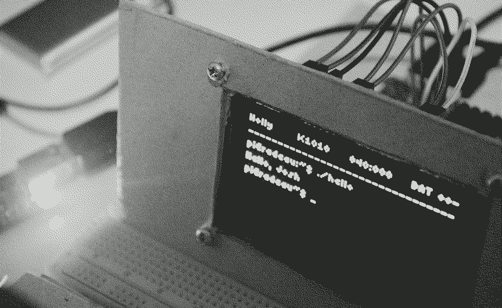
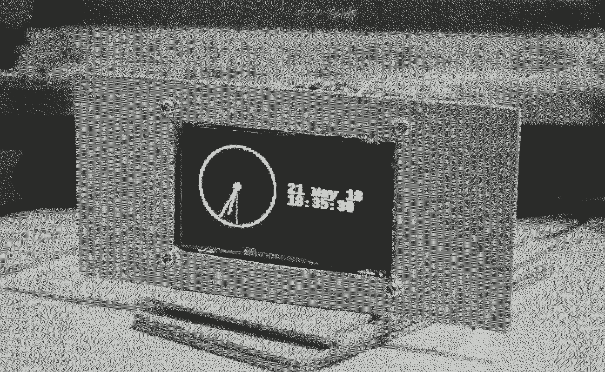

C0118–Y0618 · 44.64 h · 26.92 PY · 10.30 DV · 3.95 VI · 3.47 RE
Holly is a computer console built with a Pi Zero W and a 2.7" monochrome OLED display, and is powered by a 2700mAh lithium ion battery.
The project is put on hold as I messed up the soldering of the battery circuit. In the meantime, the Pi is being used in another project.
